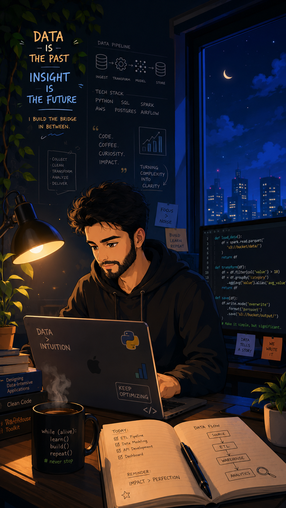

Open RAG Pipeline
A scalable, open-source document ingestion and vectorization system that accepts any file type. Built for retrieval-augmented generation workflows with efficient chunking, embedding, and semantic search.
Hello there!
Backend Engineer
With 5+ years of experience across data science, data engineering, and backend development, I turn raw data into insights and ideas into production-grade systems — from ML pipelines and ETL workflows to scalable APIs and cloud-native architectures.
With 5+ years of hands-on experience, I operate at the intersection of data science, data engineering, and software development. As a Data Scientist, I build ML models, run statistical analyses, and extract actionable insights from complex datasets. As a Data Engineer, I design and maintain ETL pipelines, data warehouses, and streaming architectures that power data-driven decision making at scale.
As a Python Developer, my expertise spans web development (Django, Flask), API design (DRF), and cloud-native solutions on AWS — working with Lambda, Step Functions, EventBridge, ECS, LightSail, and S3. I also build intelligent applications using LLMs, LangChain, and voice AI platforms like Retell, Cartesia, and ElevenLabs. From OpenAI-powered tools to autonomous AI agents — I turn complex capabilities into seamless experiences.
As a Golang Developer, I build high-performance microservices, concurrent systems, and efficient backend solutions. Go's simplicity and speed make it my go-to for systems that demand low latency and high throughput.

A scalable, open-source document ingestion and vectorization system that accepts any file type. Built for retrieval-augmented generation workflows with efficient chunking, embedding, and semantic search.
An AI-powered phone agent using ChatGPT over Twilio that conducts real-time voice conversations. Users can call in and interact with an intelligent assistant over the phone.
RESTful CRUD APIs built in Golang using the Echo framework with JWT-based authentication. Clean architecture with middleware, token management, and secure endpoint protection.
An automated attendance tracking system powered by facial recognition. Detects and identifies faces in real-time using OpenCV, automatically logging attendance with timestamps.
A machine learning model capable of discerning the emotions and sentiments expressed in text, trained using CNN, Naive Bayes, and Random Forest.
Real-time blink detection using FaceMesh MediaPipe. Tracks facial landmarks to detect eye blinks with high accuracy — useful for drowsiness detection, accessibility interfaces, and attention monitoring.
Client details anonymized under NDA
Built a Raspberry Pi-powered smart door system with real-time facial recognition using OpenCV and hand gesture control via MediaPipe. The system authenticates users through face detection algorithms and responds to gesture commands for hands-free operation.
Integrated multiple third-party platform APIs into a leading Indian hyperlocal discovery and O2O commerce platform serving 10M+ users and 300K+ merchants. Built robust Go services to connect external partners, handle high-throughput API traffic, and ensure seamless data flow across the ecosystem.
Built an intelligent document QnA platform using LLMs with a Retrieval-Augmented Generation (RAG) pipeline. Users upload documents and interact with their data through a conversational chat interface that retrieves relevant context and delivers accurate, sourced answers.
Developed a smart AI agent that helps users scale their business by acting as a strategic partner. Features include real-time internet access for up-to-date market insights, email integration for reading and discussing user emails, chat session export to DOCX, and intelligent decision-making support.
Worked as a Data Engineer for an AI platform serving medical affairs teams in biotech and life sciences. Built and maintained the entire data infrastructure on AWS — designing pipelines for scientific evidence synthesis, automated literature reviews, and KOL engagement workflows.
Built conversational AI voice agents by integrating Retell for real-time voice interactions and ElevenLabs for natural speech synthesis. Created end-to-end voice pipelines that handle inbound/outbound calls with context-aware responses and seamless handoff capabilities.
Architected a multi-tenant HR platform using Django Tenants, where each organization gets an isolated workspace. Features include employee attendance tracking, salary management, leave requests, role-based access control, and comprehensive reporting dashboards.
Developed robust browser automation solutions using Playwright and Selenium for end-to-end workflow automation, regression testing, and repetitive task elimination. Built reliable scripts that handle dynamic web elements, authentication flows, and complex multi-step processes.
Built scalable web scraping systems using BeautifulSoup4 and Selenium for extracting structured data from diverse websites. Handled anti-bot mechanisms, dynamic content rendering, pagination, and data validation pipelines for clean, reliable datasets.
A sophisticated social media platform leveraging Django. Users share posts, engage through comments and likes, expand connections, and communicate in real-time via Django Channels.
Led development of Church of Divine Structure, an innovative ecommerce platform. Users purchase products, book appointments, with integrated shipping APIs and Stripe payments.
Designed to provide concise summaries for YouTube videos, PDF links, and web links. Users could ask questions about the content for an interactive experience.
Automatic Number Plate Recognition system featuring ML-based 2D object detection for precise identification of vehicle number plates with OCR extraction.
A cutting-edge website integrated with OpenAI for QnA, Document Analysis, Asana Integration, Communication Hub, Box Integration, and Task Automation.
An online examination platform for MCQs featuring AI-Generated questions, PDF upload, Stripe monetization, and a user-friendly exam purchasing system.
If you believe we're a good match and would like to collaborate, please don't hesitate to reach out. Let's build something great together.
Got a question about me? Ask Luna →